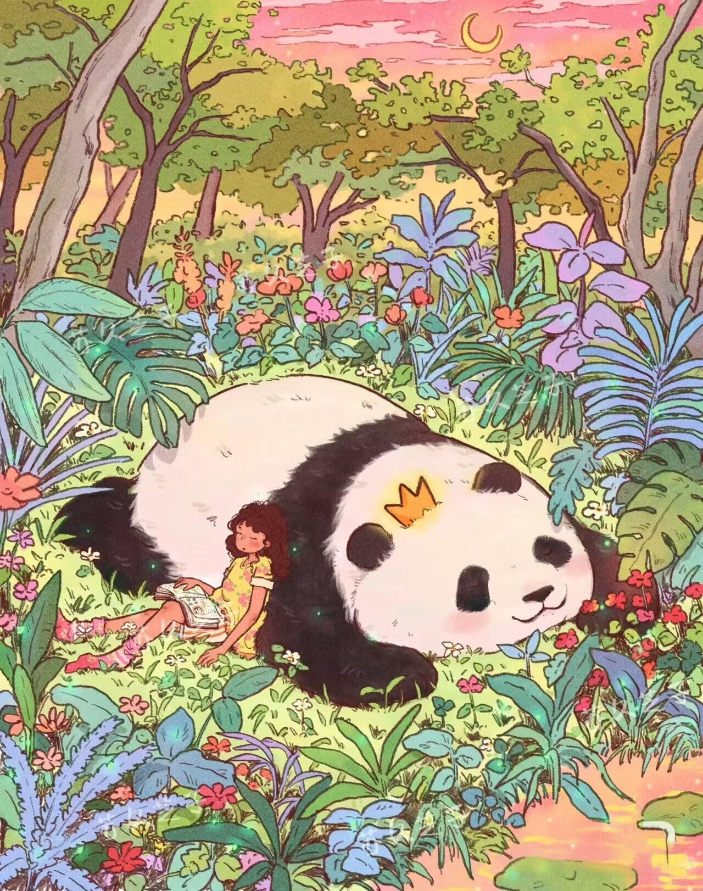
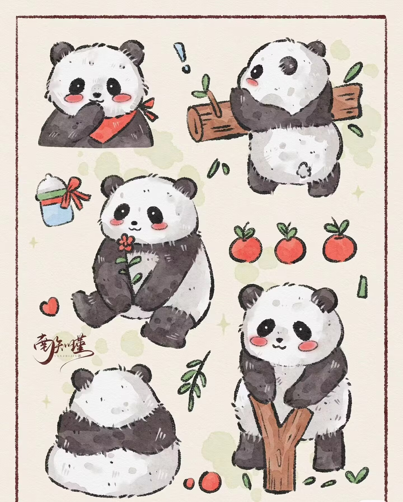

大熊猫想对你说：
“谢谢你们的付出，非常感谢，还请也照顾照顾其他小动物哦~”

动物界的活化石 它在地球上生存的时间远比人类早，早在800万年以前，就开始活跃在中国的大地上。 国宝 大熊猫是中国特有物种，被称为“国宝”全球唯一，别无二家。 栖息地 大熊猫的主要栖息地是我国四川、陕西和甘肃的山区。 最特别的外交官 它所具备的亲和力以及天真活泼的形象，是我国天然的“外交润滑剂”，因此许多中国大熊猫远赴国外。 作为最特别的外交官，有力推动了中外关系的友好发展。 中国大熊猫的种类 一方水土，一方熊猫。中国大熊猫的种类有两种：秦岭大熊猫和四川大熊猫。 如今由濒危降到易危，正是我们齐心协力的结果，希望大家能从大熊猫的保护成效上收获信心，从而更好的保护其他濒危物种。